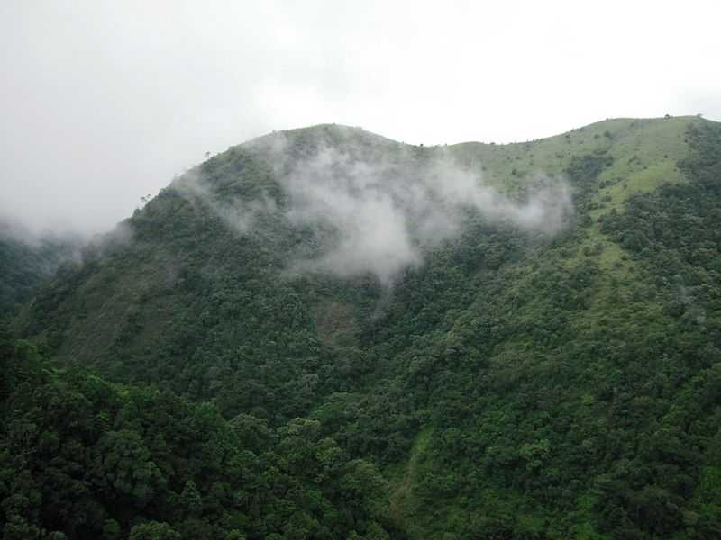
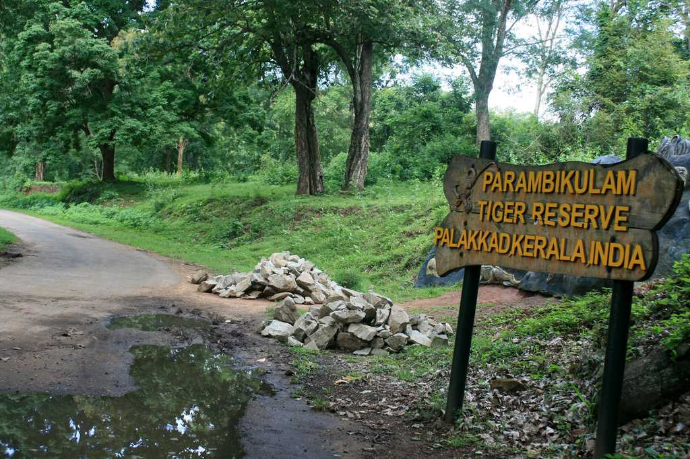

Silent Valley National Park

The Silent Valley National Park, with its lush green forests and beautiful views of the rich flora and fauna, is a popular destination for nature as well as wildlife lovers all across the globe. Spread across an area of 89 square kilometres, the Silent Valley National Park is located in the Kundali Hills of the Western Ghats in Kerala in southern India. With its long, detailed history and the unique status of a rainforest, this national park is indeed a sight to visit. The well-planned Safari and the beautiful stop-overs around the park only make a trip to this part of Kerala more worthwhile.
Read More...Palakkad Fort

The Palakkad Fort in Kerala is a beautiful historical monument that has gently integrated its high walls with its surrounding green gardens. One of the most well-preserved forts in the state of Kerala, the Palakkad fort was built in the 1766 AD by Hyder Ali and is now a protected monument under the Archaeological Survey of India.This picturesque fort is located in the heart of Palakkad town at the foothills of the Sahyadris range in a labyrinth of dense forests and crisscrossing cascading rivers. The mighty fort is spread over an area of 60,702 square meters and is immensely famous for its architecture, which displays the efficiency of the French craftsman.
Read More...Parambikulam Tiger Reserve

Parambikulam Tiger Reserve and Wildlife Sanctuary, located in the Palakkad district of Kerala, is best known for its constant efforts to preserve the dwindling tiger population. Surrounding hills and river along with flora and fauna make it the perfect place for a trek and safari.The Parambikulam Tiger Reserve is the most protected ecological terrain of the Western Ghats. Endowed with peninsular vegetation and wildlife, this destination has minimum human interference. Some of the most prized animals found here include lion-tailed macaques, Bengal tigers, Indian leopards, wild boars, sloths, king cobra, Travancore kukri snake, and the Western Ghats flying lizard among others
Read More...